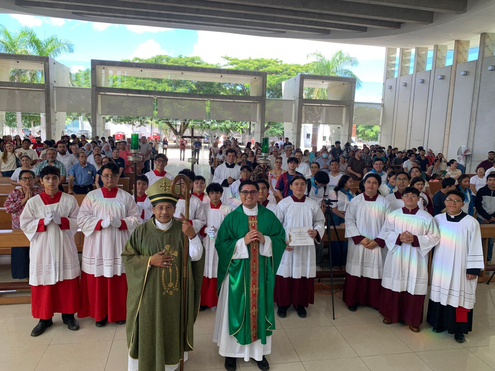

Inicio / Contacto
Contacto
Queremos mantener siempre abiertas las puertas para quienes desean conocernos, acercarse a nuestra comunidad o solicitar información sobre nuestra labor formativa.
Direcciones y mapa
Abrir en Maps
Visítanos
Contamos con dos sedes en la ciudad de Mérida: el Seminario Mayor, ubicado en Itzimná, y el Seminario Menor San Felipe de Jesús, sobre la carretera Mérida–Conkal.
Seminario Mayor — Itzimná
C. 18 #78 x 17, Itzimná, 97100 Mérida, Yucatán.
Seminario Menor — San Felipe de Jesús
Periférico Km 34, Jardines del Norte, 97305 Mérida, Yucatán.
Teléfonos
Comunícate con nosotros
Seminario Mayor+52 999 927 0777
Seminario Menor+52 999 943 6025
Horarios de atención
Cuándo podemos recibirte
| Día | Atención |
|---|---|
| Lunes a viernes | 08:00 – 13:00 y 17:00 – 19:00 |
| Sábado | 08:00 – 13:00 |